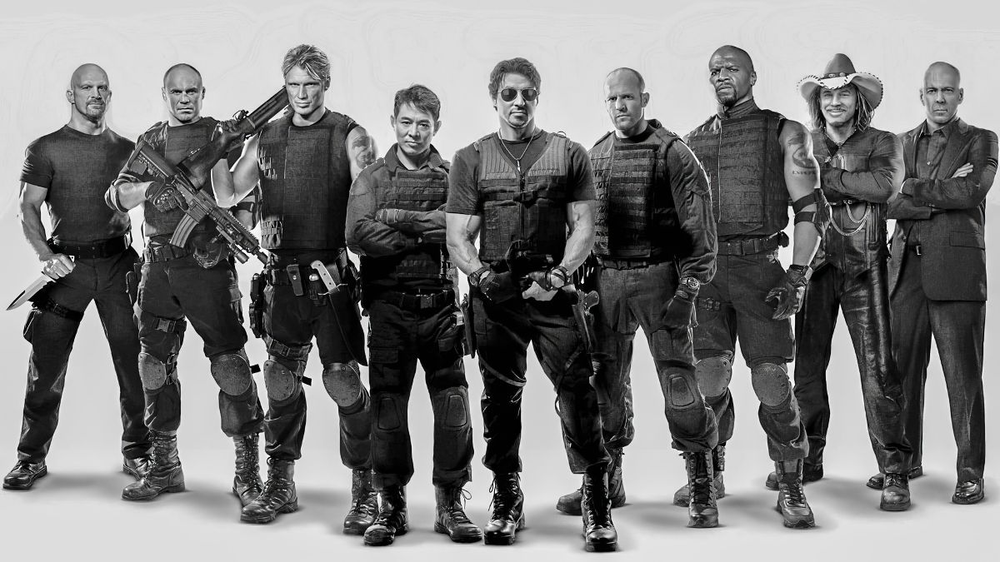

Barney Ross leads a band of highly skilled mercenaries including knife enthusiast Lee Christmas, a martial arts expert Yin Yang, heavy weapo
 |
|
New movie ready · Movies
The Expendables
2010 · ID-17+ · 1h 43m · ★ 6.3
Thriller, Adventure, Action
|
“Choose your weapon.”
Barney Ross leads a band of highly skilled mercenaries including knife enthusiast Lee Christmas, a martial arts expert Yin Yang, heavy weapons specialist Hale Caesar, demolitionist Toll Road, and a loose-cannon sniper Gunner Jensen. When the group is commissioned by the mysterious Mr. Church to assassinate the dictator of a small South American island, Barney and Lee visit the remote locale to scout out their opposition and discover the true nature of the conflict engulfing the city.
About | Director | Sylvester Stallone | | Cast | Sylvester Stallone, Jason Statham, Jet Li, Dolph Lundgren | | Rating | ★ 6.3 on TMDb · IMDb · TMDb |
File | Video | 720p H264 SDR | | Audio | HE-AAC Stereo | | Subtitles | English, Unlabelled | | Size | 701 MB | | Release | The Expendables (2010) | | Finished | Wed 25 Nov, 20:18 WIB (took 8 min) |
|
|